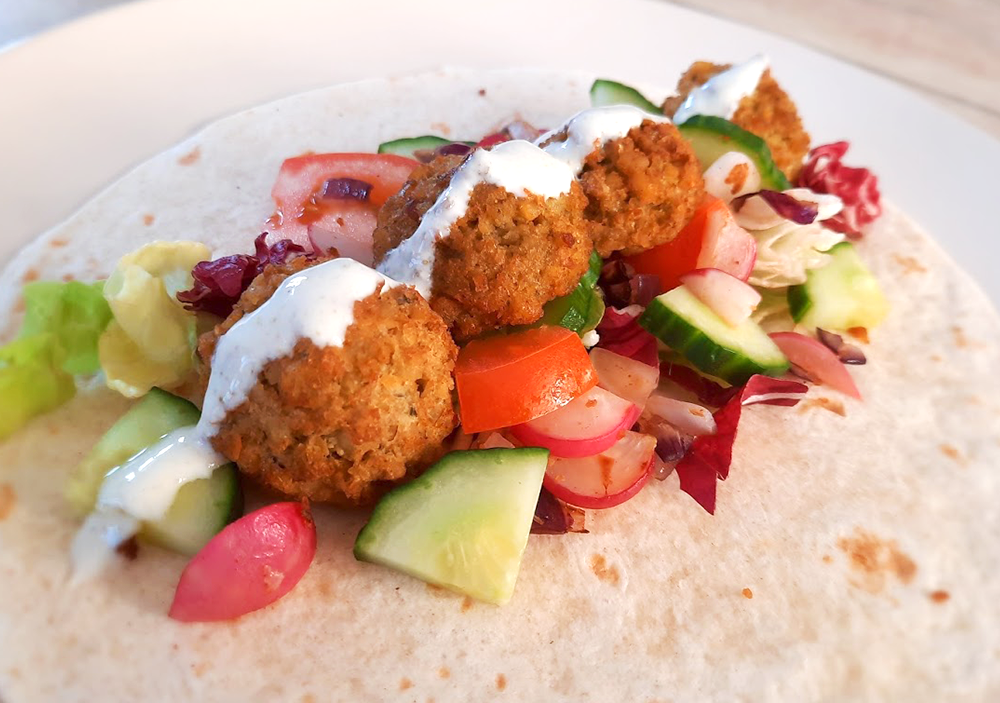

salade met gegrilde ananas

koreaanse bibimbap

griekse vega gyros wraps

avocado salade

amerikaanse caesar salade

italiaanse caponata

biefstuk met chimichurri & gegrilde groenten

bieten carpaccio

kapsalon
roze ontbijtbowl

indiase tikka masala
tropische pepernoten
falafelwrap

Bereidingsduur: 20 minuten
Aantal personen: 4
Ingrediënten:
400 gram falafel
8 tortilla wraps
1 rode ui
¼ stuk komkommer
2 tomaten
150 gram sla
7 eetlepels (vegan) yoghurt
½ theelepel chilipoeder
1 theelepel knoflookpoeder
1 theelepel komijnpoeder
1 snufje peper
optioneel radijsjes
400 gram falafel
8 tortilla wraps
1 rode ui
¼ stuk komkommer
2 tomaten
150 gram sla
7 eetlepels (vegan) yoghurt
½ theelepel chilipoeder
1 theelepel knoflookpoeder
1 theelepel komijnpoeder
1 snufje peper
optioneel radijsjes
Instructies:
1. Bestrooi de falafel met chilipoeder en snijd de ui in halve ringen. Bak de falafel in een paar minuutjes in de pan, airfryer of frietpan. Bak de uien en eventueel de radijsjes.
2. Ondertussen maak je de yoghurtsaus. Hiervoor meng je de yoghurt, knoflookpoeder en 1 theelepel komijnpoeder in een klein kommetje. Voeg naar smaak een snufje zwarte peper toe.
3. Snijd de komkommer en tomaten in plakjes.
4. Warm de wraps op en vul deze met de balletjes, groenten en de saus.
1. Bestrooi de falafel met chilipoeder en snijd de ui in halve ringen. Bak de falafel in een paar minuutjes in de pan, airfryer of frietpan. Bak de uien en eventueel de radijsjes.
2. Ondertussen maak je de yoghurtsaus. Hiervoor meng je de yoghurt, knoflookpoeder en 1 theelepel komijnpoeder in een klein kommetje. Voeg naar smaak een snufje zwarte peper toe.
3. Snijd de komkommer en tomaten in plakjes.
4. Warm de wraps op en vul deze met de balletjes, groenten en de saus.